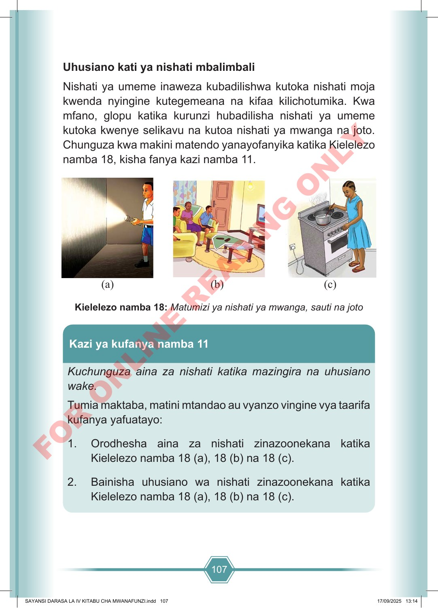

107 Uhusiano kati ya nishati mbalimbali Nishati ya umeme inaweza kubadilishwa kutoka nishati moja kwenda nyingine kutegemeana na kifaa kilichotumika. Kwa mfano, glopu katika kurunzi hubadilisha nishati ya umeme kutoka kwenye selikavu na kutoa nishati ya mwanga na joto. Chunguza kwa makini matendo yanayofanyika katika Kielelezo namba 18, kisha fanya kazi namba 11. (a) (b) (c) Kielelezo namba 18: Matumizi ya nishati ya mwanga, sauti na joto Kuchunguza aina za nishati katika mazingira na uhusiano wake. Tumia maktaba, matini mtandao au vyanzo vingine vya taarifa kufanya yafuatayo: 1. Orodhesha aina za nishati zinazoonekana katika Kielelezo namba 18 (a), 18 (b) na 18 (c). 2. Bainisha uhusiano wa nishati zinazoonekana katika Kielelezo namba 18 (a), 18 (b) na 18 (c). Kazi ya kufanya namba 11 SAYANSI DARASA LA IV KITABU CHA MWANAFUNZI.indd 107 SAYANSI DARASA LA IV KITABU CHA MWANAFUNZI.indd 107 17/09/2025 13:14 17/09/2025 13:14 F O R O N L I N E R E A D I N G O N L Y